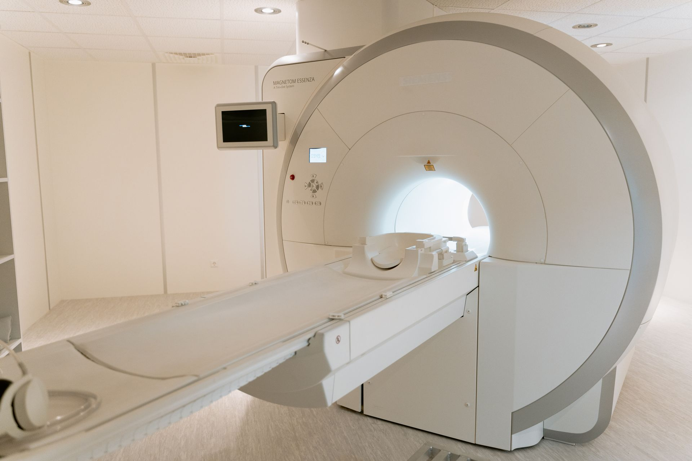
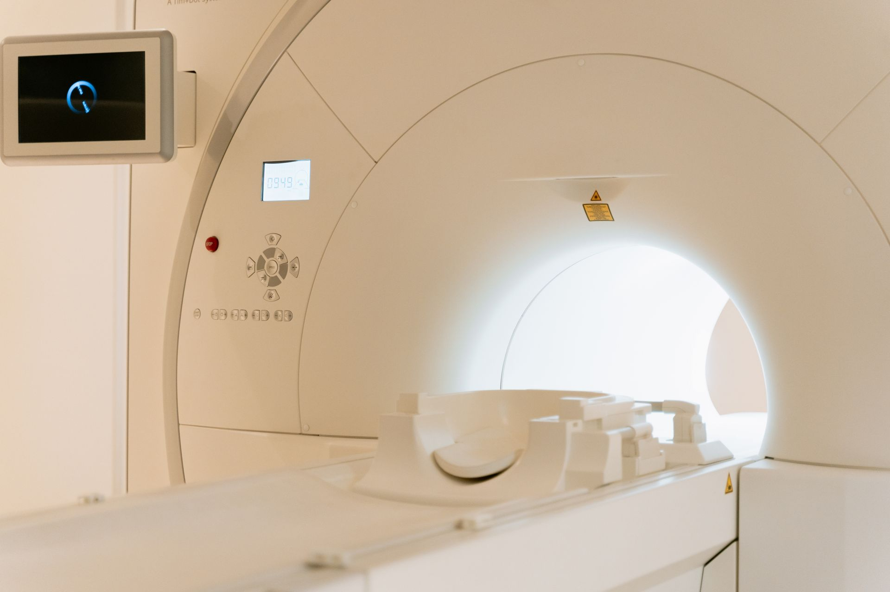

Imagerie
IRM et deux scanners
Échographie, dont l'échographie interventionnelle, et l'Institut de Radiologie du Plateau à proximité.
Une trentaine de spécialités, un plateau d'imagerie complet, une maternité et un service d'urgences ouvert jour et nuit — au cœur du Plateau, avenue Lamblin.
Quatre entrées pour trouver la bonne information en quelques secondes, depuis un téléphone comme depuis un ordinateur.
Adultes et enfants, sans rendez-vous, à toute heure du jour et de la nuit.
Appeler le 27 20 20 38 38Choisissez la spécialité et le site : l'accueil vous rappelle pour fixer l'heure.
Demander un rendez-vousIRM, scanner, échographie, laboratoire : comment se préparer et quoi apporter.
Voir l'imagerieAssureurs, entreprises, rapatriement : un interlocuteur, en français ou en anglais.
International patientsChaque spécialité a sa page : ce qui y est soigné, les praticiens qui consultent, les jours et le site de consultation.
L'examen, l'avis du spécialiste et, si besoin, l'intervention se font dans le même établissement.

Échographie, dont l'échographie interventionnelle, et l'Institut de Radiologie du Plateau à proximité.
Chirurgie par vidéo, chirurgie endoscopique et microchirurgie.
Surveillance continue des patients en situation critique.
Suivi de grossesse, accouchement et néonatologie.
Analyses biologiques sur place et sang disponible pour les interventions.
Trois adresses à Abidjan. Pour chacune : l'itinéraire, les horaires et le numéro direct, au même endroit.
Avenue Lamblin, entre l'ancienne CNPS et Versus Bank, Abidjan-Plateau.
Voir l'itinéraireCocody Saint-Jean, en face de la Cité Rouge.
Voir l'itinéraireAvenue Delafosse, Abidjan-Plateau.
Voir l'itinéraireExpatriates, travellers, international insurers and companies reach a dedicated contact who coordinates admission, cost estimates and, when needed, medical repatriation.
Les réponses aux questions que l'accueil entend chaque jour, disponibles à toute heure.
Pièce d'identité, carte d'assurance ou de mutuelle, ordonnances et examens antérieurs.
La liste à jour des assurances et mutuelles avec lesquelles la polyclinique travaille.
Liste à fournir par la cliniqueJours et heures de chaque spécialité, sur chaque site. Les urgences restent ouvertes en continu.
À compléter avec l'accueilDes articles de prévention rédigés avec les médecins de la polyclinique — pour informer, jamais pour promettre.

À jeun ou non, objets métalliques, durée : les réponses pratiques.
Échographies, bilans sanguins : à quel moment et pourquoi.
Soif inhabituelle, fatigue, amaigrissement : ce qui justifie un bilan.
Indiquez la spécialité et vos disponibilités : l'accueil vous rappelle pour confirmer le jour et l'heure.